El espacio $\mathbb R^n$
El «escenario» donde viven las funciones de varias variables: puntos y vectores con $n$ coordenadas, cómo medir longitudes, distancias y ángulos, qué significa «abierto», «cerrado» y «frontera» en el plano, y tres formas de dar las coordenadas de un punto (polares, cilíndricas y esféricas).
0Antes de empezar U p.142
Hasta ahora las funciones tenían una entrada, un número $x$ de la recta. Pero casi todo lo real depende de varias cosas a la vez (la presión de un gas depende de la temperatura y del volumen). Para estudiarlo necesitamos «rectas con más dimensiones»: $\mathbb R^2$ (el plano), $\mathbb R^3$ (el espacio) y, en general, $\mathbb R^n$. Este tema construye ese escenario: vectores, longitudes, distancias, ángulos y conjuntos, copiando lo que ya sabes de la recta (intervalos abiertos y cerrados, extremos de un intervalo, valor absoluto como distancia).
U p.142Qué necesitas saber ya
- Suma de vectores y producto por un número (Álgebra); idea de espacio vectorial y base (U p.143 lo da por sabido).
- Trigonometría básica: seno, coseno y tangente de ángulos usuales ($\pi/6,\pi/4,\pi/3,\pi/2\dots$) y cuadrantes; en radianes.
- Intervalos abiertos y cerrados y valor absoluto como distancia (Tema 1.1): $|x-a|<r$ es el intervalo $(a-r,a+r)$. Aquí ese «intervalo» se vuelve un disco.
- Teorema de Pitágoras: de ahí sale la fórmula de la distancia.
Mapa del tema
| Apartado | Qué contiene | Dónde está |
|---|---|---|
| 1 El espacio $\mathbb R^n$ | $n$-uplas, suma, producto por escalares, base canónica | U pp.142-144 |
| 2 Producto escalar, norma, distancia y ángulo | Def. 4.1 y 4.2, ortogonalidad, desigualdad triangular | U pp.143-147 |
| 3 Discos y topología del plano | disco, punto interior, frontera, abierto, cerrado, acotado | U pp.145-147 |
| 4 Polares, cilíndricas y esféricas | los tres cambios de coordenadas y sus trampas | U pp.148-152 |
| 5 Ejercicios de E | 4.1-4.8 | E pp.136-141 |
| 6 Ejemplos propios | 4 ejemplos | propio |
| 7 Examen | 7 problemas de X | X |
| 8 Chuleta y comprobación | fórmulas, errores, lista | síntesis |
Qué se pide en los ejercicios y en el examen
(A) Producto escalar, norma y ortogonalidad de dos vectores concretos (E 4.3, 4.4; X 2010, 2012, 2018). (B) Distancia entre dos puntos de $\mathbb R^3$ (X 2015, 2016, 2018). (C) Ángulo entre dos vectores (E 4.6; X 2018). (D) Cambios de coordenadas: polares, cilíndricas y esféricas, en los dos sentidos (E 4.6-4.8; X 2011). (E) Abierto, cerrado, frontera de un conjunto del plano (E 4.5); no suele preguntarse suelto, pero se usa luego para extremos absolutos (Tema 5). (F) Preguntas de «tipo test» conceptuales sobre qué operaciones tienen sentido (E 4.1, 4.2). Casi todo son preguntas cortas de 1 punto: cuentas simples que hay que hacer sin fallar.
1El espacio $\mathbb R^n$ U pp.142-144
Para decir dónde está un punto de la recta basta un número. Para un punto de un mapa, dos (calle y número, o latitud y longitud). Para un dron en el aire, tres (los dos anteriores y la altura). $\mathbb R^n$ es el conjunto de todas las «direcciones» con $n$ números: no hace falta poder dibujarlo para $n\ge4$; las fórmulas funcionan igual y es lo que se usa, por ejemplo, para describir la posición y la velocidad de un objeto que se mueve en un plano: $2+2$ números.
PPara $n\in\mathbb N$, $\mathbb R^n=\mathbb R\times\overset{n}{\cdots}\times\mathbb R$ es el conjunto de las $n$-uplas $\bar x=(x_1,\dots,x_n)$ con cada $x_i\in\mathbb R$. Escribimos $\bar x$ para indicar que es un elemento de $\mathbb R^n$ (un vector o un punto), no un número. Las $x_i$ son las coordenadas cartesianas.
Operaciones (componente a componente): $\bar x+\bar y=(x_1+y_1,\dots,x_n+y_n)$ y $\lambda\bar x=(\lambda x_1,\dots,\lambda x_n)$, con $\lambda\in\mathbb R$ (un número, «escalar»). Con ellas $\mathbb R^n$ es un espacio vectorial de dimensión $n$.
Base canónica: $\bar e_1=(1,0,\dots,0),\ \bar e_2=(0,1,0,\dots,0),\dots,\bar e_n=(0,\dots,0,1)$. Todo vector se escribe $\bar x=x_1\bar e_1+\dots+x_n\bar e_n$. En U los vectores también se denotan $\vec u$ o $u$.
U pp.142-143$\bar x=(1,2)=\bar e_1+2\bar e_2$ y $\bar y=(3,1)=3\bar e_1+\bar e_2$. Entonces $\bar z=\bar x+\bar y=(4,3)$ y $\bar v=2\bar x=(2,4)$. Geométricamente, $\bar z$ es la diagonal del paralelogramo de lados $\bar x$ e $\bar y$ y $\bar v$ es $\bar x$ estirado al doble (Figura 4.1). Norma y distancia: $\|\bar y\|=\sqrt{3^2+1^2}=\sqrt{10}$ y $d((1,2),(3,1))=\sqrt{2^2+1^2}=\sqrt5$.
U p.144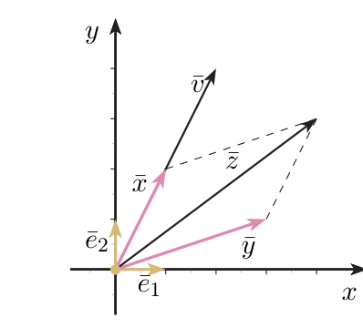
En $\mathbb R^3$, $\bar e_1=(1,0,0)$, $\bar e_2=(0,1,0)$, $\bar e_3=(0,0,1)$ apuntan en los ejes $x,y,z$ positivos. Para $\bar x=(1,2,1)$: $\|\bar x\|=\sqrt{1+4+1}=\sqrt6$. Distancia entre $(0,1,3)$ y $(1,2,1)$: $\sqrt{(0-1)^2+(1-2)^2+(3-1)^2}=\sqrt6$.
U pp.144-145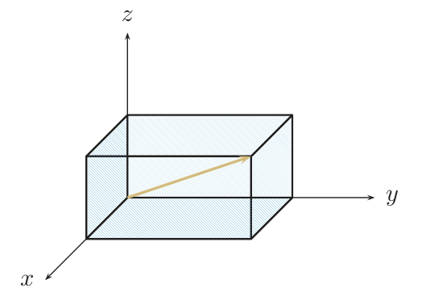
Tratar $\bar x$ como un número: no se puede «dividir por un vector», ni escribir $\bar x>\bar y$ (no hay un orden natural en $\mathbb R^n$ como en $\mathbb R$). Solo se comparan números: normas, distancias, productos escalares.
2Producto escalar, norma, distancia y ángulo U pp.143-147
En la recta, $|x|$ es la «longitud» de $x$ y $|x-y|$ la distancia entre $x$ e $y$. En $\mathbb R^n$ queremos lo mismo. El truco: el producto escalar multiplica «lo que un vector tiene de común con otro» y devuelve un número. Si lo calculas de un vector consigo mismo, obtienes el cuadrado de su longitud (Pitágoras generalizado). Y compara direcciones: es $0$ si son perpendiculares, positivo si apuntan «más o menos al mismo lado» y negativo si apuntan «a lados opuestos».
PEl producto escalar de $\bar x=(x_1,\dots,x_n)$ e $\bar y=(y_1,\dots,y_n)$ de $\mathbb R^n$ es el número $$\bar x\cdot\bar y=x_1y_1+\dots+x_ny_n=\sum_{i=1}^nx_iy_i.$$ La norma (longitud) de $\bar x$ es $\|\bar x\|=\sqrt{\bar x\cdot\bar x}=\sqrt{x_1^2+\dots+x_n^2}$. Los vectores de norma $1$ se llaman unitarios.
Distancia entre $\bar x$ e $\bar y$: $d(\bar x,\bar y)=\|\bar y-\bar x\|=\sqrt{(y_1-x_1)^2+\dots+(y_n-x_n)^2}$.
U p.143$\bar x\cdot\bar y$ es un número (multiplicar parejas y sumar). $\lambda\bar x$ es un vector (multiplicar cada componente por $\lambda$). El producto escalar necesita dos vectores del mismo $\mathbb R^n$. Antes de operar, mira qué «tipo» sale en cada paso.
El ángulo $\alpha$ que forman dos vectores no nulos $\bar x,\bar y$ cumple $$\cos\alpha=\frac{\bar x\cdot\bar y}{\|\bar x\|\,\|\bar y\|},\qquad \alpha=\arccos\Big(\frac{\bar x\cdot\bar y}{\|\bar x\|\|\bar y\|}\Big)\in[0,\pi].$$ Dos vectores son ortogonales si y solo si su producto escalar es $0$. (Recuerda: por convención $\arccos x\in[0,\pi]$ para $x\in[-1,1]$.)
U p.147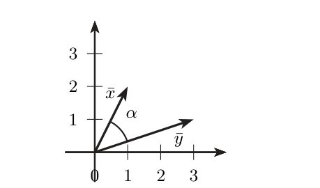
$\bar a=(1,2,2)$, $\bar b=(2,0,-1)$ en $\mathbb R^3$.
- $\bar a\cdot\bar b=1\cdot2+2\cdot0+2\cdot(-1)=0$: ortogonales ($\alpha=\pi/2$).
- $\|\bar a\|=\sqrt{1+4+4}=3$ y $\|\bar b\|=\sqrt{4+0+1}=\sqrt5$.
- $d(\bar a,\bar b)=\|\bar b-\bar a\|=\|(1,-2,-3)\|=\sqrt{14}$.
Propiedades que U da por sabidas propia
U dice (p. 143) que «se limita a enunciar» las operaciones y sus propiedades porque son conocidas del Álgebra, pero no las enuncia. Estas tres se usan en los ejercicios:
- Homogeneidad. $\|\lambda\bar u\|=|\lambda|\,\|\bar u\|$. Ojo al valor absoluto: una norma nunca es negativa. (Razón: $\sqrt{\lambda^2u_1^2+\dots+\lambda^2u_n^2}=\sqrt{\lambda^2}\,\|\bar u\|$.)
- Desigualdad triangular. $\|\bar u+\bar v\|\le\|\bar u\|+\|\bar v\|$. Dibuja $\bar u$, luego $\bar v$ a continuación: $\bar u+\bar v$ es el tercer lado del triángulo, y un lado nunca supera a la suma de los otros dos. Hay igualdad solo si $\bar u$ y $\bar v$ apuntan en el mismo sentido (o uno de ellos es nulo). Es la versión vectorial de $|a+b|\le|a|+|b|$ (S App. A, p. A8). Útil después: $\|\bar q\|\ge\|\bar p\|-\|\bar p-\bar q\|$.
- Cauchy-Schwarz. $|\bar u\cdot\bar v|\le\|\bar u\|\,\|\bar v\|$. Es lo que garantiza que el cociente de la Def. 4.2 está en $[-1,1]$ y, por tanto, que el $\arccos$ existe. No hace falta demostrarla para el examen.
(i) Creer que $\|\bar u+\bar v\|=\|\bar u\|+\|\bar v\|$ («la longitud es lineal»): en general es menor. (ii) Escribir $\|-3\bar u\|=-3\|\bar u\|$. (iii) Dejar el producto escalar como vector, sin sumar. (iv) Dar el ángulo en grados cuando U y E trabajan en radianes.
3Discos y conjuntos abiertos y cerrados U pp.145-147
En la recta, el intervalo $(0,1)$ es «abierto» (sus extremos no le pertenecen) y $[0,1]$ «cerrado» (los contiene). En el plano, un conjunto es como un charco: el borde es la frontera. Si estás en un punto de dentro y puedes dar un pasito en cualquier dirección sin salirte, el punto es interior. Si, por pequeño que sea el pasito, hay direcciones que te sacan del charco y otras que te dejan dentro, estás en la frontera. Un charco es abierto si no incluye su borde, y cerrado si lo incluye. Estas ideas serán necesarias al estudiar extremos de funciones de varias variables.
PEl disco abierto de centro $(a,b)$ y radio $r$ es $\{(x,y)\in\mathbb R^2: d((a,b),(x,y))<r\}$ (el círculo sin su circunferencia). El disco cerrado, con $\le$, la incluye. En $\mathbb R^3$ (y $\mathbb R^n$) se habla de bola abierta o cerrada, con las mismas definiciones.
Dado $C\subset\mathbb R^2$, $(a,b)$ es un punto interior de $C$ si existe un disco abierto de centro $(a,b)$ incluido en $C$.
U p.145Un punto es exterior a $C$ si existe un disco abierto centrado en él sin ningún punto de $C$. Todo punto del plano es exactamente una de estas tres cosas respecto de $C$: interior, exterior o frontera. U (p. 142, objetivos) nombra «interior, exterior y frontera» pero no define «exterior»; esa definición es propia.
U p.142 P- Punto frontera de $C$: aquel $(a,b)$ tal que todo disco abierto centrado en él tiene puntos de $C$ y puntos que no están en $C$. Su conjunto es la frontera de $C$.
- Abierto: $C$ es vacío o todos sus puntos son interiores. $\mathbb R^2$ es abierto.
- Cerrado: $C$ contiene a su frontera. Si no tiene puntos frontera (como $\mathbb R^2$), es cerrado.
- Acotado: se puede incluir en un disco (su «extensión» es finita).
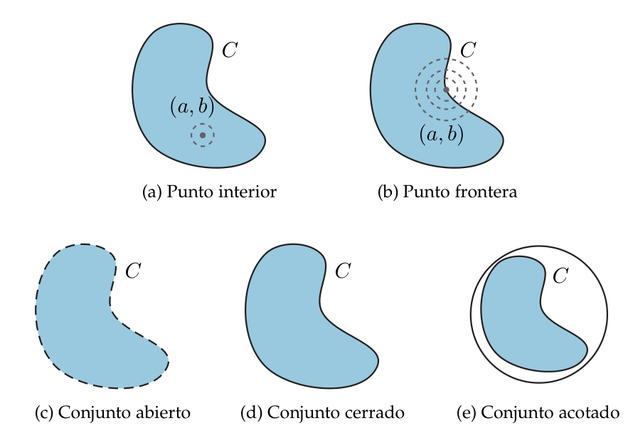
$\{(x,y):(x-1)^2+(y+2)^2<9\}$ es el círculo de radio $3$ centrado en $(1,-2)$, sin la circunferencia. Su frontera es $\{(x-1)^2+(y+2)^2=9\}$; son frontera, por ejemplo, $(-2,-2)$, $(1,1)$ y $(2,2\sqrt2-2)$. El punto $(0,0)$ es interior (se puede rodear con un disco contenido). Todos sus puntos son interiores: el conjunto es abierto.
U pp.146-147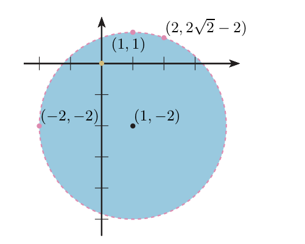
$(x-a)^2+(y-b)^2\ \square\ r^2$ significa «distancia al centro $(a,b)$ $\square$ $r$». Con «$<$» o «$>$»: sin borde (abierto). Con «$\le$» o «$\ge$»: con borde (cerrado). La frontera es siempre la igualdad.
«Abierto» y «cerrado» no son contrarios: un conjunto puede ser ninguno de los dos (una corona con un borde dentro y otro fuera: ver Propio 2), y $\mathbb R^2$ y $\emptyset$ son ambos. Tampoco confundas frontera con «exterior»: la frontera es el borde, no «todo lo que no es $C$».
4Coordenadas polares, cilíndricas y esféricas U pp.148-152
Las coordenadas cartesianas $(x,y)$ dicen cuánto avanzar en horizontal y en vertical. Las polares dicen: «mira en la dirección $\theta$ (un ángulo) y camina una distancia $\rho$». Son como el radar de un barco. Las cilíndricas añaden la altura $z$ (como un ascensor en un edificio redondo) y las esféricas dan, además de la distancia, la «longitud» $\theta$ y la «latitud» $\varphi$ (como en el globo terráqueo). Se usan porque ciertas curvas y superficies (círculos, cilindros, esferas) tienen ecuaciones mucho más simples.
PPolares en $\mathbb R^2$ U pp.148-149
Todo $(x,y)\in\mathbb R^2\setminus\{(0,0)\}$ queda determinado de forma única por un radio $\rho>0$ y un ángulo $\theta\in[0,2\pi)$: $\rho$ es la distancia al origen y $\theta$ el ángulo que forma $(x,y)$ con el semieje $x$ positivo, medido en sentido contrario a las agujas del reloj. $$\begin{cases}x=\rho\cos\theta\\ y=\rho\operatorname{sen}\theta\end{cases}\ \longleftrightarrow\ \begin{cases}\rho=\sqrt{x^2+y^2}=\|(x,y)\|\\ \operatorname{tg}\theta=\dfrac yx\end{cases}$$ Para elegir $\theta$ hay que fijarse en los signos de $x$ e $y$. Si $x=0$: $\theta=\pi/2$ ($y>0$) o $\theta=3\pi/2$ ($y<0$).
U p.148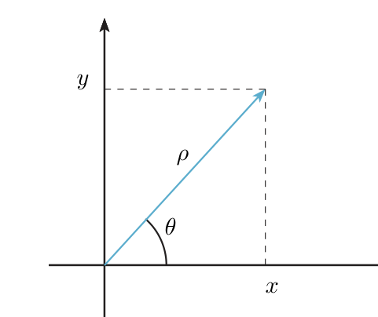
La calculadora da $\arctan(y/x)\in(-\pi/2,\pi/2)$, que solo es el $\theta$ correcto en el primer cuadrante. Los dos ángulos de $[0,2\pi)$ con la misma tangente están en cuadrantes opuestos (I y III, o II y IV). Regla segura con $\theta_0=\arctan|y/x|\in[0,\pi/2)$:
| Signos | Cuadrante | $\theta$ |
|---|---|---|
| $x>0,\ y\ge0$ | I | $\theta_0$ |
| $x<0,\ y\ge0$ | II | $\pi-\theta_0$ |
| $x<0,\ y<0$ | III | $\pi+\theta_0$ |
| $x>0,\ y<0$ | IV | $2\pi-\theta_0$ |
| $x=0$ | eje $y$ | $\pi/2$ si $y>0$; $3\pi/2$ si $y<0$ |
Siempre se puede comprobar sustituyendo: $\rho\cos\theta$ debe devolver $x$ y $\rho\operatorname{sen}\theta$ debe devolver $y$. La tabla es un resumen propio de la regla de U.
P- De cartesianas a polares: $(2,2\sqrt3)$. $\rho=\sqrt{4+12}=4$; $\operatorname{tg}\theta=\sqrt3$, y como $x,y>0$ (primer cuadrante) $\theta=\pi/3$. Polares: $(4,\pi/3)$.
- De polares a cartesianas: $(\rho,\theta)=(2,7\pi/4)$. $x=2\cos\frac{7\pi}4=\sqrt2$, $y=2\operatorname{sen}\frac{7\pi}4=-\sqrt2$.
Cilíndricas en $\mathbb R^3$ U pp.149-150
Son las polares de $(x,y)$ más la tercera coordenada sin cambiar: $$x=\rho\cos\theta,\quad y=\rho\operatorname{sen}\theta,\quad z=z\ \ \longleftrightarrow\ \ \rho=\sqrt{x^2+y^2},\quad\operatorname{tg}\theta=\frac yx,\quad z=z.$$ Aquí $\rho$ es la distancia del punto al eje $z$ (no al origen). Muy convenientes para cilindros y superficies de revolución.
U p.149$(\rho,\theta,z)=(2,2\pi/3,-1)$: $x=2\cos\frac{2\pi}3=-1$, $y=2\operatorname{sen}\frac{2\pi}3=\sqrt3$, $z=-1$. Cartesianas: $(-1,\sqrt3,-1)$.
U pp.149-150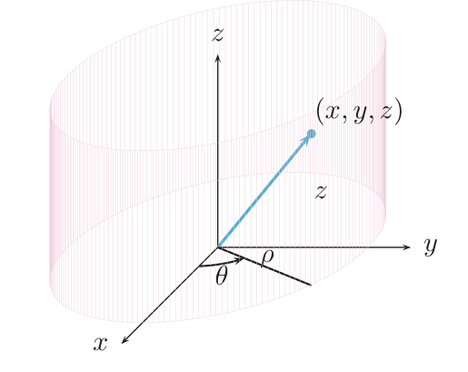
Esféricas en $\mathbb R^3$ U pp.150-152
Con $\rho>0$, $\theta\in[0,2\pi)$ y $\varphi\in[-\pi/2,\pi/2]$. $\rho$ es la distancia al origen; $\theta$ es el ángulo de la proyección sobre el plano $xy$ con el semieje $x$ positivo (la «longitud»); $\varphi$ es el ángulo que forma $(x,y,z)$ con su proyección sobre el plano $xy$ (la «latitud»: positivo hacia arriba). $$\begin{cases}x=\rho\cos\varphi\cos\theta\\ y=\rho\cos\varphi\operatorname{sen}\theta\\ z=\rho\operatorname{sen}\varphi\end{cases}\longleftrightarrow\ \begin{cases}\rho=\sqrt{x^2+y^2+z^2}\\ \operatorname{tg}\theta=y/x\\ \operatorname{sen}\varphi=\dfrac z{\sqrt{x^2+y^2+z^2}}\end{cases}$$ $\theta$ se calcula como en cilíndricas. Como $\varphi\in[-\pi/2,\pi/2]$, queda determinado de forma única por $\operatorname{sen}\varphi=z/\rho$ (en ese intervalo el seno toma cada valor una sola vez); su signo es el de $z$. U escribe $\varphi$ como «ϕ»; E, «φ».
U pp.150-151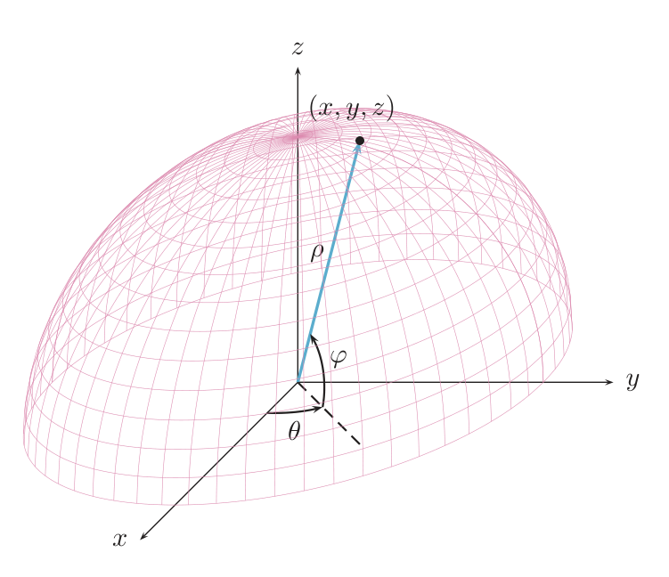
- Ej. 4.7. Punto $(3,-4,-1)$. Cilíndricas: $\rho=\sqrt{9+16}=5$, $z=-1$, $\operatorname{tg}\theta=-4/3$ con $x>0$, $y<0$ (cuarto cuadrante, fila IV de la tabla): $\theta_0=\arctan\frac43\approx0{,}9273$ y $\theta=2\pi-\theta_0\approx5{,}3559$ rad. Esféricas: $\rho=\sqrt{26}$ (es otra $\rho$), el mismo $\theta$ y $\varphi=\operatorname{arcsen}(-1/\sqrt{26})\approx-0{,}1974$ rad.
- Ej. 4.8. $(\rho,\theta,\varphi)=(1,5\pi/4,\pi/6)$: $x=\cos\frac\pi6\cos\frac{5\pi}4=-\frac{\sqrt6}4$, $y=\cos\frac\pi6\operatorname{sen}\frac{5\pi}4=-\frac{\sqrt6}4$, $z=\operatorname{sen}\frac\pi6=\frac12$.
- Otra convención de $\varphi$. Muchos libros miden el ángulo esférico desde el eje $z$ ($z=\rho\cos\varphi$, $\varphi\in[0,\pi]$). En U, $\varphi$ se mide desde el plano $xy$ y $z=\rho\operatorname{sen}\varphi$. En el examen manda U.
- Dos $\rho$ distintas. En cilíndricas $\rho=\sqrt{x^2+y^2}$; en esféricas $\rho=\sqrt{x^2+y^2+z^2}$.
- La unicidad solo se tiene fuera de ese eje (no afecta a los ejercicios).
- La calculadora en grados: aquí siempre radianes.
5Ejercicios del libro, resueltos E pp.136-141
Orden recomendado para aprender: 4.1 → 4.2 → 4.3 → 4.4 → 4.6 → 4.7 → 4.8 → 4.5 (el 4.5, de conjuntos, es el más conceptual). El 4.9 y siguientes (E p. 142 en adelante) son de §4.2.
Ejercicio 4.1 · ¿se pueden multiplicar escalarmente tres vectores? ¿Y uno de $\mathbb R^2$ con uno de $\mathbb R^3$? E p.136
¿Se pueden multiplicar escalarmente tres vectores? ¿Y un vector de $\mathbb R^2$ con uno de $\mathbb R^3$?
- Qué me piden
- Decidir si el producto escalar se puede definir entre tres vectores y entre un vector de $\mathbb R^2$ y otro de $\mathbb R^3$.
- Cómo lo pienso
- El producto escalar es una máquina con dos entradas del mismo tamaño y una salida numérica. Si el número de entradas o su tamaño no encaja, la máquina no funciona. Pensar en el tipo de cada objeto (vector o número) basta.
- Qué uso
- Producto escalar (U Def. 4.1, p.143): $\bar x\cdot\bar y=\sum x_iy_i$ con $\bar x,\bar y\in\mathbb R^n$.
- Por dónde empiezo
- Escribo la definición y miro cuántos vectores entran y de qué $\mathbb R^n$.
- Qué dice la definición (Def. 4.1, U p.143): $\bar x\cdot\bar y=x_1y_1+\dots+x_ny_n$ con $\bar x,\bar y\in\mathbb R^n$: dos vectores con el mismo número $n$ de componentes, porque se multiplican «la primera con la primera, la segunda con la segunda…».
- Tres vectores. Si intentamos $(\bar u\cdot\bar v)\cdot\bar w$, el primer paréntesis ya es un número $\lambda$. Queda $\lambda\bar w$, que no es un producto escalar sino un número por un vector (da un vector, ver 4.2). No existe un «producto escalar de tres vectores».
- $\mathbb R^2$ con $\mathbb R^3$. Por ejemplo $(1,2)$ y $(3,4,5)$: la tercera componente $5$ no tiene pareja. La definición no se aplica.
Respuesta: no en ambos casos.
Rellenar con ceros el vector corto ($(1,2)\to(1,2,0)$) y «multiplicar»: eso identifica $\mathbb R^2$ con un plano de $\mathbb R^3$, que no es la Def. 4.1.
Ejercicio 4.2 · el vector $(\bar u\cdot\bar v)\,\bar w$ E p.136
El vector $(\bar u\cdot\bar v)\,\bar w$, con $\bar u,\bar v,\bar w\in\mathbb R^n$, verifica: a) es nulo o paralelo al vector $\bar w$; b) es nulo o paralelo a $\bar v$; c) es nulo o paralelo a $\bar u$; d) esa expresión no da lugar a un vector.
- Qué me piden
- Decir qué es el objeto $(\bar u\cdot\bar v)\,\bar w$ y a qué vector es paralelo (o si es nulo).
- Cómo lo pienso
- Lo del paréntesis es un número $\lambda$, y «número por $\bar w$» es $\bar w$ estirado, encogido o dado la vuelta: paralelo a $\bar w$, o el vector cero.
- Qué uso
- Producto escalar (U Def. 4.1, p.143) y producto de un número por un vector (U p.143).
- Por dónde empiezo
- Calculo de dentro afuera anotando el tipo de cada paso: $\bar u\cdot\bar v$ es un número.
- Tipo del paréntesis. $\bar u\cdot\bar v$ es un producto escalar: un número. Llámalo $\lambda$.
- Tipo del total. $\lambda\bar w=(\lambda w_1,\dots,\lambda w_n)$ es un producto por escalar: es un vector. Queda descartada la d).
- Cuándo es nulo: si $\lambda=0$ (es decir, $\bar u\perp\bar v$) o si $\bar w=\bar 0$.
- Si no es nulo, es un múltiplo no nulo de $\bar w$: eso es exactamente «paralelo a $\bar w$» (mismo sentido si $\lambda>0$, opuesto si $\lambda<0$).
- Por qué no b) ni c). Contraejemplo: $\bar u=\bar v=(1,0)$ y $\bar w=(0,1)$ dan $1\cdot(0,1)=(0,1)$, que no es nulo ni paralelo a $(1,0)$.
Respuesta: a).
Elegir d) por leer «algo entre tres vectores», o decir «paralelo a $\bar w$» olvidando el caso $\bar u\cdot\bar v=0$.
Ejercicio 4.3 · ¿son ortogonales $(0,1,2)$ y $(-3,-4,2)$? E p.136
¿Son ortogonales los vectores $(0,1,2)$ y $(-3,-4,2)$?
- Qué me piden
- Decidir si dos vectores de $\mathbb R^3$ son ortogonales (sí o no, con justificación).
- Cómo lo pienso
- Ortogonal quiere decir «perpendicular»; en coordenadas eso se detecta con un único número: el producto escalar.
- Qué uso
- Ortogonalidad: $\bar x\perp\bar y\iff\bar x\cdot\bar y=0$ (U Def. 4.2, p.147); producto escalar (U Def. 4.1, p.143).
- Por dónde empiezo
- Multiplico componente a componente y sumo.
- Criterio (Def. 4.2): ortogonales $\iff\bar x\cdot\bar y=0$.
- Cálculo (Def. 4.1): $(0,1,2)\cdot(-3,-4,2)=0\cdot(-3)+1\cdot(-4)+2\cdot2=0-4+4=0$.
- Conclusión: sí, son ortogonales.
«$(0,1,2)\cdot(-3,-4,2)=0\cdot(-3)+1\cdot(-4)+2\cdot2=0$. Como el producto escalar es $0$, los vectores son ortogonales.»
Multiplicar componentes y dar el vector $(0,-4,4)$: falta sumar.
Este mismo ejercicio cayó en examen (X1, X p.1, feb. 2010), ver apartado 7.
Ejercicio 4.4 · suma, normas y desigualdad triangular con $\bar u=(-1,1)$, $\bar v=(2,3)$ E pp.136-137
Dados $\bar u=(-1,1)$ y $\bar v=(2,3)$: 1) calcular $\bar u+\bar v$, $\|\bar u\|$, $\|\bar v\|$ y $\|\bar u+\bar v\|$; ¿se cumple $\|\bar u\|+\|\bar v\|=\|\bar u+\bar v\|$? ¿contradice esto que cumpla la desigualdad triangular? 2) calcular $3\bar u$ y $\|3\bar u\|$; ¿se cumple $\|3\bar u\|=3\|\bar u\|$? 3) representar $\bar u$, $\bar v$, $\bar u+\bar v$ y $3\bar u$.
- Qué me piden
- Calcular suma, normas y $3\bar u$ para dos vectores de $\mathbb R^2$, comprobar si la norma de la suma es la suma de normas y si $\|3\bar u\|=3\|\bar u\|$, y dibujarlos.
- Cómo lo pienso
- La longitud de la suma no es la suma de longitudes (un lado de un triángulo es más corto que los otros dos juntos), pero multiplicar por $3$ sí multiplica la longitud por $3$.
- Qué uso
- Norma $\|\bar x\|=\sqrt{\sum x_i^2}$ (U p.143); desigualdad triangular $\|\bar u+\bar v\|\le\|\bar u\|+\|\bar v\|$; $\|\lambda\bar u\|=|\lambda|\|\bar u\|$.
- Por dónde empiezo
- Calculo $\bar u+\bar v$ componente a componente y luego las tres normas.
- Suma (componente a componente): $\bar u+\bar v=(-1+2,\,1+3)=(1,4)$.
- Normas (raíz de la suma de cuadrados): $\|\bar u\|=\sqrt{(-1)^2+1^2}=\sqrt2\approx1{,}414$; $\|\bar v\|=\sqrt{4+9}=\sqrt{13}\approx3{,}606$; $\|\bar u+\bar v\|=\sqrt{1+16}=\sqrt{17}\approx4{,}123$.
- Igualdad. $\|\bar u\|+\|\bar v\|\approx5{,}020\ne4{,}123\approx\|\bar u+\bar v\|$. No se cumple. (Sin calculadora: si $\sqrt2+\sqrt{13}=\sqrt{17}$, al elevar al cuadrado saldría $15+2\sqrt{26}=17$, es decir $\sqrt{26}=1$, falso.)
- Desigualdad triangular (margen de E p. 137): $\|\bar u+\bar v\|\le\|\bar u\|+\|\bar v\|$ — «menor o igual», no «igual». Aquí $4{,}12\le5{,}02$: se cumple con desigualdad estricta. No hay contradicción. La igualdad solo ocurre si $\bar u$ y $\bar v$ apuntan en el mismo sentido (o uno de ellos es nulo); $(-1,1)$ y $(2,3)$ no.
- Apartado 2. $3\bar u=(-3,3)$ y $\|3\bar u\|=\sqrt{9+9}=\sqrt{18}=3\sqrt2=3\|\bar u\|$. Sí se cumple (en general $\|\lambda\bar u\|=|\lambda|\|\bar u\|$).
- Apartado 3. Flechas desde el origen hasta $(-1,1)$, $(2,3)$, $(1,4)$ y $(-3,3)$: $\bar u+\bar v$ es la diagonal del paralelogramo de lados $\bar u$ y $\bar v$ y $3\bar u$ está sobre la misma recta que $\bar u$, mismo sentido, triple de largo (figura en E p. 137).
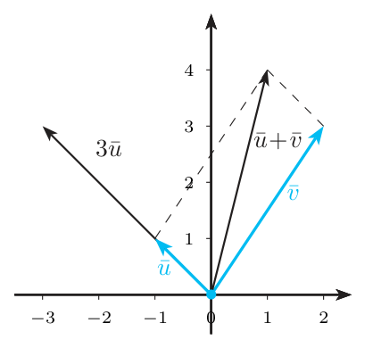
(i) Creer $\|\bar u+\bar v\|=\|\bar u\|+\|\bar v\|$. (ii) $\|-3\bar u\|=-3\|\bar u\|$: es $|-3|\|\bar u\|=3\sqrt2$. (iii) $\sqrt{(-1)^2+1^2}=\sqrt{-1+1}$: el cuadrado de $-1$ es $+1$.
Ejercicio 4.5 · el disco $x^2+y^2\le4$: frontera, abierto o cerrado E pp.138-139
Dado $C=\{(x,y)\in\mathbb R^2:x^2+y^2\le4\}$: 1) representarlo; 2) determinar y representar su frontera; 3) razonar si es abierto o cerrado.
- Qué me piden
- Dibujar el disco $x^2+y^2\le4$, hallar su frontera y decidir si es abierto o cerrado.
- Cómo lo pienso
- $C$ es el disco de radio $2$ con su borde. La frontera son los puntos en los que, por pequeño que sea el disco que se ponga alrededor, hay a la vez puntos de $C$ y de fuera: la circunferencia del borde. Como $C$ la contiene, es cerrado.
- Qué uso
- Disco, punto interior, frontera, conjunto abierto y cerrado (U pp.145-146); distancia al origen $=\sqrt{x^2+y^2}$ (U p.143).
- Por dónde empiezo
- Leo $x^2+y^2\le4$ como «distancia al origen $\le2$» y dibujo.
- Apartado 1. $x^2+y^2=d\big((0,0),(x,y)\big)^2$, así que $x^2+y^2\le4$ significa «distancia al origen $\le2$»: el disco cerrado de centro $(0,0)$ y radio $2$, relleno y con borde continuo.
- Apartado 2 (los pasos 2-4 son la justificación analítica). Cada punto de la circunferencia $S=\{x^2+y^2=4\}$ es frontera. Ejemplo: $P=(2,0)$ y un disco de radio $0{,}1$ centrado en él contiene a $P\in C$ ($4\le4$) y a $(2{,}05;0)$, que no es de $C$ ($4{,}2025>4$). En general: si $\|P\|=2$ y el disco tiene radio $r$, el punto $Q=(1+\tfrac r4)P$ está a distancia $\tfrac r4\cdot2=\tfrac r2<r$ de $P$ y cumple $\|Q\|=2+\tfrac r2>2$, o sea $Q\notin C$. Así todo disco centrado en $P$ tiene puntos de $C$ ($P$) y de fuera ($Q$).
- Un punto de dentro no es frontera. Ejemplo: $P''=(1,0)$ y disco de radio $1$: si $Q$ dista menos de $1$ de $(1,0)$ entonces $\|Q\|<1+1=2$, luego $Q\in C$. En general: sea $s=\|P''\|<2$ y toma el disco de radio $\delta=2-s$. Si $Q$ está en él, $\|Q-P''\|<2-s$ y, por la desigualdad triangular, $\|Q\|\le\|P''\|+\|Q-P''\|<s+(2-s)=2$, luego $Q\in C$. Todo el disco está en $C$: es punto interior.
- Un punto de fuera no es frontera. Ejemplo: $P'=(3,0)$ y disco de radio $1$: si $\|Q-P'\|<1$ entonces $\|Q\|\ge\|P'\|-\|P'-Q\|>3-1=2$, luego $Q\notin C$. En general: con $s=\|P'\|>2$ y $\delta=s-2$: si $\|Q-P'\|<\delta$, entonces $\|Q\|\ge\|P'\|-\|P'-Q\|>s-(s-2)=2$, así que $Q\notin C$. El disco no tiene puntos de $C$.
- Frontera $=S=\{x^2+y^2=4\}$ (por ejemplo $(2,0)$ y $(\sqrt2,\sqrt2)$). Se dibuja solo la circunferencia.
- Apartado 3. $C$ es cerrado porque contiene a su frontera: todos los puntos de $S$ cumplen $x^2+y^2=4\le4$. No es abierto: $(2,0)\in C$ no es interior (todo disco centrado en él se sale de $C$).
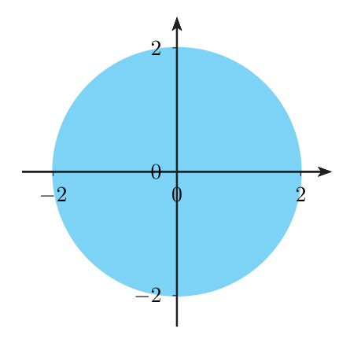
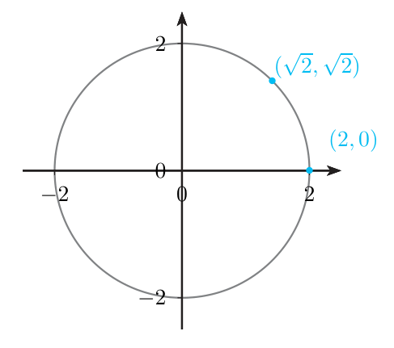
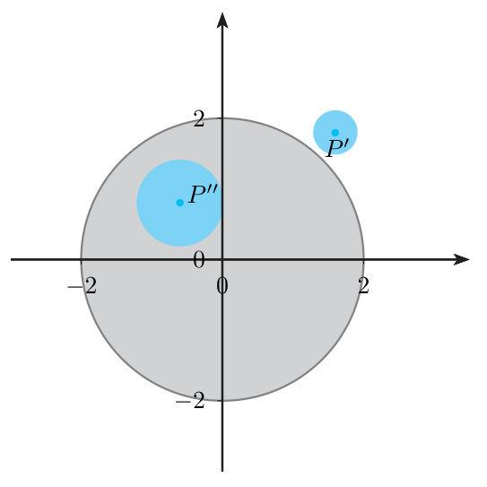
(i) Pensar que abierto y cerrado son contrarios. (ii) Decir que la frontera es «el exterior». (iii) Dibujar el disco con borde discontinuo (eso indica que el borde no está incluido).
Ejercicio 4.6 · polares de $(-1,1)$ y ángulo entre $\bar u$ y $\bar v$ E p.140
Dados $\bar u=(-1,1)$ y $\bar v=(2,3)$: 1) expresar $\bar u$ en coordenadas polares; 2) determinar el ángulo que forman $\bar u$ y $\bar v$.
- Qué me piden
- Pasar $(-1,1)$ a coordenadas polares y hallar el ángulo entre $\bar u$ y $\bar v$.
- Cómo lo pienso
- Polares = «a qué distancia del origen y con qué ángulo respecto del eje $x$»; el ángulo hay que elegirlo según el cuadrante en que cae el punto. El ángulo entre dos vectores sale de cuánto «se parecen» en dirección, que mide el producto escalar.
- Qué uso
- Polares (U §4.1.3, p.148); ángulo entre vectores $\cos\alpha=\frac{\bar x\cdot\bar y}{\|\bar x\|\|\bar y\|}$ (U Def. 4.2, p.147).
- Por dónde empiezo
- Calculo $\rho=\sqrt{x^2+y^2}$ y miro los signos de $x$ e $y$ para saber el cuadrante.
- Radio: $\rho=\sqrt{(-1)^2+1^2}=\sqrt2$.
- Tangente: $\operatorname{tg}\theta=1/(-1)=-1$.
- Cuadrante: $x=-1<0$, $y=1>0$: segundo cuadrante.
- Ángulo: en $[0,2\pi)$ hay dos con tangente $-1$: $3\pi/4$ (II) y $7\pi/4$ (IV). Como estamos en el II, $\theta=3\pi/4$. (Con la tabla: $\theta_0=\pi/4$, $\theta=\pi-\pi/4$.)
- Comprobación: $\sqrt2\cos\frac{3\pi}4=\sqrt2\cdot(-\frac{\sqrt2}2)=-1$ y $\sqrt2\operatorname{sen}\frac{3\pi}4=1$. ✓ Resultado: $(\rho,\theta)=(\sqrt2,3\pi/4)$.
- Apartado 2. $\bar u\cdot\bar v=(-1)\cdot2+1\cdot3=1$; $\|\bar u\|=\sqrt2$, $\|\bar v\|=\sqrt{13}$.
- $\cos\alpha=\dfrac1{\sqrt2\sqrt{13}}=\dfrac1{\sqrt{26}}\approx0{,}1961$, así que $\alpha=\arccos\frac1{\sqrt{26}}\approx1{,}3734$ rad $\approx78{,}69^\circ$. Aquí no hay que elegir cuadrante: $\arccos$ ya devuelve un valor en $[0,\pi]$ (U p.147). Como $\cos\alpha>0$, el ángulo es agudo.
(i) $\theta=\arctan(-1)=-\pi/4$: ni está en $[0,2\pi)$ ni en el cuadrante correcto. (ii) Calculadora en grados. (iii) Confundir el ángulo polar de $\bar u$ ($3\pi/4$, con el eje $x$) con el ángulo entre $\bar u$ y $\bar v$.
Ejercicio 4.7 · cilíndricas de $(1,1,1)$ E p.140
Si las coordenadas cartesianas de un punto son $(1,1,1)$, ¿cuáles son sus coordenadas cilíndricas?
- Qué me piden
- Dar las coordenadas cilíndricas de $(1,1,1)$.
- Cómo lo pienso
- Cilíndricas = polares del punto «visto desde arriba» $(x,y)$, más la altura $z$ sin tocar.
- Qué uso
- Cilíndricas (U §4.1.3, p.149): $\rho=\sqrt{x^2+y^2}$, $\operatorname{tg}\theta=y/x$, $z=z$.
- Por dónde empiezo
- Calculo $\rho$ con solo $x$ e $y$.
- Fórmulas (U p.149): $\rho=\sqrt{x^2+y^2}$, $\operatorname{tg}\theta=y/x$ (con el cuadrante), $z=z$.
- $\rho=\sqrt{1+1}=\sqrt2$.
- $\operatorname{tg}\theta=1$ con $x>0$, $y>0$ (primer cuadrante): $\theta=\pi/4$.
- $z=1$. Comprobación: $\sqrt2\cos\frac\pi4=1$, $\sqrt2\operatorname{sen}\frac\pi4=1$. ✓
Resultado: $(\rho,\theta,z)=(\sqrt2,\pi/4,1)$.
Poner $\rho=\sqrt{x^2+y^2+z^2}=\sqrt3$: esa es la $\rho$ de las esféricas. En cilíndricas $\rho$ es la distancia al eje $z$.
Ejercicio 4.8 · cambios entre cartesianas, cilíndricas y esféricas E p.141
1) Dado $(1,2,-1)$ en cartesianas, determinar sus coordenadas cilíndricas y esféricas. 2) Dado $(1,\pi,0)$ en cilíndricas, hallar sus cartesianas. 3) Dado $(1,\pi/2,0)$ en esféricas, hallar sus cartesianas.
- Qué me piden
- Cambiar de coordenadas: cartesianas $\to$ cilíndricas y esféricas, y cilíndricas/esféricas $\to$ cartesianas.
- Cómo lo pienso
- Ir hacia cartesianas es solo sustituir en las fórmulas; salir de cartesianas exige elegir bien los ángulos ($\theta$ por el cuadrante, $\varphi$ por el signo de $z$).
- Qué uso
- Cilíndricas y esféricas (U §4.1.3, pp.149-151); en U, $z=\rho\operatorname{sen}\varphi$ con $\varphi\in[-\pi/2,\pi/2]$.
- Por dónde empiezo
- Empiezo por las cilíndricas de $(1,2,-1)$ (polares de $(1,2)$ y $z$ copiada); las esféricas reutilizan $\theta$.
- Cilíndricas de $(1,2,-1)$. $\rho=\sqrt{1+4}=\sqrt5$; $\operatorname{tg}\theta=2$ con $x,y>0$ (primer cuadrante): $\theta=\arctan2\approx1{,}1071$; $z=-1$. Cilíndricas: $(\sqrt5,\arctan2,-1)\approx(2{,}2361;1{,}1071;-1)$.
- Esféricas. $\rho=\sqrt{1+4+1}=\sqrt6$ (ahora es la distancia al origen). $\theta$ es el mismo que en cilíndricas: $\arctan2\approx1{,}1071$.
- $\operatorname{sen}\varphi=z/\rho=-1/\sqrt6$; como $\varphi\in[-\pi/2,\pi/2]$, $\varphi=\operatorname{arcsen}(-1/\sqrt6)\approx-0{,}4205$ rad (negativo: el punto está por debajo del plano $xy$). Esféricas: $(\sqrt6,\arctan2,\operatorname{arcsen}(-1/\sqrt6))\approx(2{,}4495;1{,}1071;-0{,}4205)$.
- Comprobación: $\cos\varphi=\sqrt{5/6}$, luego $\rho\cos\varphi=\sqrt5$, y $\sqrt5\cos\theta=1$, $\sqrt5\operatorname{sen}\theta=2$, $z=\sqrt6\cdot(-1/\sqrt6)=-1$. ✓
- Apartado 2 (cilíndricas $(1,\pi,0)$): $x=1\cdot\cos\pi=-1$, $y=\operatorname{sen}\pi=0$, $z=0$. Cartesianas: $(-1,0,0)$.
- Apartado 3 (esféricas $(1,\pi/2,0)$): $x=\cos0\cos\frac\pi2=0$, $y=\cos0\operatorname{sen}\frac\pi2=1$, $z=\operatorname{sen}0=0$. Cartesianas: $(0,1,0)$ ($\varphi=0$: en el plano $xy$; $\theta=\pi/2$: semieje $y$ positivo).
(i) Medir $\varphi$ desde el eje $z$: en U, $z=\rho\operatorname{sen}\varphi$. (ii) Usar la misma $\rho$ en cilíndricas y esféricas.
6Ejemplos propios (de fácil a difícil) P
Propio 1 · producto escalar, norma, unitario, ángulo y desigualdad triangular en $\mathbb R^3$ P
$\bar a=(1,2,2)$ y $\bar b=(2,-1,2)$. Calcula $\bar a\cdot\bar b$, las normas, un vector unitario en la dirección de $\bar a$, el ángulo y comprueba la desigualdad triangular.
- Qué me piden
- Calcular producto escalar, normas, un vector unitario, el ángulo y comprobar la desigualdad triangular para dos vectores de $\mathbb R^3$.
- Cómo lo pienso
- Todo sale de dos ingredientes: el producto escalar (multiplicar y sumar) y la norma (raíz de la suma de cuadrados). Un unitario es el vector «reescalado» para que mida $1$.
- Qué uso
- U Def. 4.1 p.143 y Def. 4.2 p.147: producto escalar, norma, ángulo; desigualdad triangular.
- Por dónde empiezo
- Calculo $\bar a\cdot\bar b$ y las dos normas.
- $\bar a\cdot\bar b=2-2+4=4$.
- $\|\bar a\|=\sqrt{1+4+4}=3$ y $\|\bar b\|=\sqrt{4+1+4}=3$.
- Unitario: $\bar a/\|\bar a\|=(\tfrac13,\tfrac23,\tfrac23)$; su norma es $\sqrt{\tfrac19+\tfrac49+\tfrac49}=1$. ✓
- $\cos\alpha=\tfrac4{9}$, $\alpha=\arccos\tfrac49\approx1{,}1102$ rad $\approx63{,}61^\circ$ (agudo, porque $\bar a\cdot\bar b>0$).
- $\bar a+\bar b=(3,1,4)$, $\|\bar a+\bar b\|=\sqrt{26}\approx5{,}10\le6=\|\bar a\|+\|\bar b\|$. ✓
Dividir por la suma de componentes ($1+2+2=5$) en vez de por la norma.
Propio 2 · una corona: ni abierta ni cerrada P
$A=\{(x,y)\in\mathbb R^2:1<x^2+y^2\le4\}$. Descríbelo, halla su frontera y decide si es abierto, cerrado y acotado.
- Qué me piden
- Describir la corona $1
- Cómo lo pienso
- Es el anillo entre la circunferencia de radio $1$ (excluida) y la de radio $2$ (incluida): un borde no le pertenece y el otro sí, así que ni contiene toda su frontera ni es todo interior.
- Qué uso
- Interior, frontera, abierto, cerrado, acotado (U pp.145-146); razonamiento de E 4.5.
- Por dónde empiezo
- Traduzco la condición a $1<\|(x,y)\|\le2$.
- La condición es $1<\|(x,y)\|\le2$: corona circular, borde interior discontinuo y exterior continuo.
- Frontera: las dos circunferencias $x^2+y^2=1$ y $x^2+y^2=4$ (mismo razonamiento que en E 4.5). Un punto con $1<\|P\|<2$ es interior: el disco de radio $\min(\|P\|-1,2-\|P\|)$ queda dentro. Ejemplo: $P=(1{,}5;0)$ con radio $0{,}5$.
- Abierto: no. $(2,0)\in A$ es frontera, no interior.
- Cerrado: no. $(1,0)$ es frontera y no está en $A$ (no cumple $1<1$).
- Acotado: sí, cabe en el disco de centro $(0,0)$ y radio $3$.
Concluir «no es abierto, luego es cerrado».
Propio 3 · reconocer una bola en $\mathbb R^3$ completando cuadrados P
$B=\{(x,y,z):x^2+y^2+z^2-2z<3\}$. Demuestra que es una bola abierta (centro y radio) y clasifica $(0,0,0)$, $(1,1,1)$, $(0,0,3)$, $(2,0,1)$ y $(0,0,5)$ en interiores, frontera o exteriores.
- Qué me piden
- Ver que $x^2+y^2+z^2-2z<3$ es una bola abierta (centro y radio) y clasificar cinco puntos.
- Cómo lo pienso
- Una bola es «los puntos a distancia menor que $r$ del centro». La desigualdad dada no lo parece, pero completando el cuadrado en $z$ aparece exactamente esa forma.
- Qué uso
- Bola abierta y frontera (U pp.145-147); completar cuadrados.
- Por dónde empiezo
- Completo el cuadrado en $z$: $z^2-2z=(z-1)^2-1$.
- $z^2-2z=(z-1)^2-1$, luego la condición es $x^2+y^2+(z-1)^2<4$, es decir $d\big((x,y,z),(0,0,1)\big)<2$: bola abierta de centro $(0,0,1)$ y radio $2$. Es abierta y acotada.
- Frontera: la esfera $x^2+y^2+(z-1)^2=4$.
- Con $g=x^2+y^2+z^2-2z$ (interior si $g<3$, frontera si $g=3$, exterior si $g>3$): $(0,0,0)$: $g=0$, interior. $(1,1,1)$: $g=1$, interior. $(0,0,3)$: $g=3$, frontera (y no pertenece a $B$). $(2,0,1)$: $g=3$, frontera. $(0,0,5)$: $g=15$, exterior.
Olvidar el $-1$ al completar el cuadrado y obtener radio $\sqrt3$.
Propio 4 · conversiones con el cuadrante «trampa» P
a) Pasa a polares $(-1,-\sqrt3)$ y $(0,-3)$. b) Pasa $(-\sqrt3,-1,2)$ a cilíndricas y esféricas y comprueba volviendo a cartesianas. c) Escribe en cilíndricas el cilindro $x^2+y^2=9$ y en esféricas la esfera $x^2+y^2+z^2=4$.
- Qué me piden
- Pasar puntos a polares, cilíndricas y esféricas (con cuadrantes difíciles) y escribir un cilindro y una esfera en esas coordenadas.
- Cómo lo pienso
- La calculadora no sabe en qué cuadrante estás: hay que decírselo con los signos de $x$ e $y$. Las superficies salen de sustituir las fórmulas de cambio.
- Qué uso
- Polares, cilíndricas y esféricas (U §4.1.3, pp.148-151); $\cos^2+\operatorname{sen}^2=1$.
- Por dónde empiezo
- En a) calculo $\rho$ y el ángulo de referencia con la tangente, y ajusto al cuadrante.
- a) $(-1,-\sqrt3)$: $\rho=2$, $\operatorname{tg}\theta=\sqrt3$. La calculadora da $\pi/3$, pero $x<0,y<0$ es el tercer cuadrante: $\theta=\pi+\pi/3=4\pi/3$. Comprobación: $2\cos\frac{4\pi}3=-1$, $2\operatorname{sen}\frac{4\pi}3=-\sqrt3$. ✓ Polares $(2,4\pi/3)$.
- $(0,-3)$: $x=0$, no se puede dividir; por la regla de U (p. 148), $y<0$ da $\theta=3\pi/2$, $\rho=3$. Polares $(3,3\pi/2)$.
- b) Cilíndricas: $\rho=\sqrt{3+1}=2$, $\operatorname{tg}\theta=\frac1{\sqrt3}$ con $\theta_0=\pi/6$; tercer cuadrante: $\theta=7\pi/6$; $z=2$. Cilíndricas $(2,7\pi/6,2)$.
- Esféricas: $\rho=\sqrt{3+1+4}=2\sqrt2$, $\theta=7\pi/6$, $\operatorname{sen}\varphi=\frac2{2\sqrt2}=\frac{\sqrt2}2$, luego $\varphi=\pi/4$. Esféricas $(2\sqrt2,7\pi/6,\pi/4)$.
- Vuelta: $x=2\sqrt2\cdot\frac{\sqrt2}2\cdot(-\frac{\sqrt3}2)=-\sqrt3$; $y=2\operatorname{sen}\frac{7\pi}6=-1$; $z=2\sqrt2\cdot\frac{\sqrt2}2=2$. ✓
- c) $x^2+y^2=\rho^2\cos^2\theta+\rho^2\operatorname{sen}^2\theta=\rho^2$: el cilindro es $\rho=3$ ($\theta$ y $z$ libres). Y $x^2+y^2+z^2=\rho^2\cos^2\varphi+\rho^2\operatorname{sen}^2\varphi=\rho^2$: la esfera es $\rho=2$.
Dar $\theta=\pi/3$ para $(-1,-\sqrt3)$: ese ángulo corresponde a $(1,\sqrt3)$, el punto opuesto.
7Así lo preguntan en el examen X
Las preguntas de $\mathbb R^n$ son siempre cortas (1 punto) y de cuatro tipos: producto escalar y normas, distancia, ángulo u ortogonalidad y teoría de polares. En X no hay preguntas sueltas de abiertos, cerrados y frontera: ese tipo se practica con E 4.5 y reaparece como paso intermedio en extremos absolutos de temas posteriores (justificar que un conjunto es cerrado y acotado, p. ej. X p.25 y X p.97). Las demás preguntas con polares (X pp.47, 57, 65, 143) pertenecen a §4.2-4.4 y se verán más adelante.
X1 · ortogonalidad de $(0,1,2)$ y $(-3,-4,2)$ X p.1 (feb. 2010)
¿Son ortogonales los vectores $(0,1,2)$ y $(-3,-4,2)$? Justifíquese la respuesta.
- Qué me piden
- Decidir (y justificar) si $(0,1,2)$ y $(-3,-4,2)$ son ortogonales.
- Cómo lo pienso
- Ortogonal significa perpendicular; en coordenadas se comprueba con el producto escalar, que debe valer cero.
- Qué uso
- Ortogonalidad $\iff\bar x\cdot\bar y=0$ (U Def. 4.2, p.147); producto escalar (U Def. 4.1, p.143).
- Por dónde empiezo
- Multiplico componente a componente y sumo.
Es idéntico al Ejercicio 4.3: $(0,1,2)\cdot(-3,-4,2)=0-4+4=0$, luego son ortogonales (Def. 4.2).
X2 · teoría de las coordenadas polares X p.13 (feb. 2011)
Describa brevemente las coordenadas polares en $\mathbb R^2$. Indique también cómo se cambia de coordenadas polares a cartesianas y viceversa.
- Qué me piden
- Describir las coordenadas polares y dar el cambio polares $\leftrightarrow$ cartesianas.
- Cómo lo pienso
- En vez de «cuánto a la derecha y cuánto arriba» $(x,y)$, se dice «a qué distancia del origen y en qué dirección» $(\rho,\theta)$. Es una pregunta de teoría: hay que decir qué son $\rho$ y $\theta$, dar las dos fórmulas y avisar del cuadrante.
- Qué uso
- Polares (U §4.1.3, pp.148-149).
- Por dónde empiezo
- Defino $\rho$ y $\theta$ con sus rangos y escribo las fórmulas en ambos sentidos.
- Descripción. Todo punto $(x,y)\ne(0,0)$ queda determinado de forma única por un radio $\rho>0$ y un ángulo $\theta\in[0,2\pi)$: $\rho=\|(x,y)\|$ es la distancia al origen y $\theta$ el ángulo que forma el vector $(x,y)$ con el semieje $x$ positivo, medido en sentido antihorario.
- Polares a cartesianas: $x=\rho\cos\theta$, $y=\rho\operatorname{sen}\theta$.
- Cartesianas a polares: $\rho=\sqrt{x^2+y^2}$; $\operatorname{tg}\theta=y/x$ si $x\ne0$, eligiendo de los dos ángulos de $[0,2\pi)$ con esa tangente el del cuadrante que indican los signos de $x$ e $y$; si $x=0$, $\theta=\pi/2$ ($y>0$) o $3\pi/2$ ($y<0$).
- Ejemplo: $(2,2\sqrt3)\mapsto\rho=4$, $\theta=\pi/3$; $(\rho,\theta)=(2,7\pi/4)\mapsto(\sqrt2,-\sqrt2)$.
Dar $\theta=\arctan(y/x)$ sin más (falla en los cuadrantes II, III y IV y para $x=0$), u olvidar que el origen no tiene ángulo definido.
X3 · producto escalar y normas en $\mathbb R^4$ X pp.22-23 (feb. 2012)
Calcule el producto escalar de $(1,2,3,4)$ y $(-1,-2,-3,-4)$ y la norma de estos dos vectores.
- Qué me piden
- Calcular el producto escalar de dos vectores de $\mathbb R^4$ y la norma de cada uno.
- Cómo lo pienso
- Las fórmulas de $\mathbb R^2$ y $\mathbb R^3$ valen igual en $\mathbb R^4$: solo hay más sumandos. Un producto escalar puede ser negativo; una norma, nunca.
- Qué uso
- Producto escalar y norma (U p.143).
- Por dónde empiezo
- Multiplico parejas de componentes y sumo.
- Producto escalar: $1\cdot(-1)+2\cdot(-2)+3\cdot(-3)+4\cdot(-4)=-1-4-9-16=-30$.
- $\|(1,2,3,4)\|=\sqrt{1+4+9+16}=\sqrt{30}$.
- $\|(-1,-2,-3,-4)\|=\sqrt{30}$ (es el primero por $-1$ y $\|-\bar x\|=|-1|\|\bar x\|$).
- Comentario: $\bar x\cdot\bar y=-30=-\|\bar x\|\|\bar y\|$, luego $\cos\alpha=-1$, $\alpha=\pi$: vectores opuestos.
«$\bar x\cdot\bar y=-1-4-9-16=-30$; $\|\bar x\|=\sqrt{1+4+9+16}=\sqrt{30}$; $\|\bar y\|=\sqrt{30}$.»
Escribir $\|(-1,-2,-3,-4)\|=-\sqrt{30}$.
X4 · distancia entre $(1,-1,0)$ y $(1,3,5)$ X p.53 (sept. 2015)
Calcular la distancia euclídea entre los puntos $(1,-1,0)$ y $(1,3,5)$.
- Qué me piden
- Hallar la distancia entre dos puntos de $\mathbb R^3$.
- Cómo lo pienso
- La distancia entre dos puntos es la longitud del vector que va de uno al otro: se restan y se mide.
- Qué uso
- Distancia $d(\bar x,\bar y)=\|\bar y-\bar x\|$ (U p.143).
- Por dónde empiezo
- Resto las coordenadas con cuidado con los signos.
- Fórmula (U p.143): $d(\bar x,\bar y)=\|\bar y-\bar x\|$.
- Diferencia: $(1,3,5)-(1,-1,0)=(0,4,5)$ (si se resta al revés sale $(0,-4,-5)$; da igual porque $\|-\bar w\|=\|\bar w\|$).
- Norma: $\sqrt{0+16+25}=\sqrt{41}\approx6{,}403$.
«$d=\|(1,3,5)-(1,-1,0)\|=\|(0,4,5)\|=\sqrt{0+16+25}=\sqrt{41}$.»
Restar mal un negativo: $3-(-1)=4$, no $2$.
X5 · distancia entre $(4,2,0)$ y $(1,-1,3)$ X p.70 (sept. 2016)
Calcule la distancia entre los elementos $(4,2,0)$ y $(1,-1,3)\in\mathbb R^3$.
- Qué me piden
- Hallar la distancia entre dos puntos de $\mathbb R^3$.
- Cómo lo pienso
- Es la misma cuenta que X4: restar, elevar al cuadrado, sumar y raíz.
- Qué uso
- Distancia $d(\bar x,\bar y)=\|\bar y-\bar x\|$ (U p.143).
- Por dónde empiezo
- Calculo la diferencia $(4,2,0)-(1,-1,3)$.
- Diferencia: $(4,2,0)-(1,-1,3)=(3,3,-3)$.
- $d=\sqrt{9+9+9}=\sqrt{27}=3\sqrt3\approx5{,}196$.
«$d=\|(4,2,0)-(1,-1,3)\|=\|(3,3,-3)\|=\sqrt{27}=3\sqrt3$.»
X6 · distancia y ángulo X p.89 (feb. 2018)
Calcule la distancia entre los puntos $(1,0,-1)$ y $(2,0,-1)$ con la métrica euclídea. Determine el ángulo que forman los vectores $(0,1,2)$ y $(1,-1,1)$.
- Qué me piden
- Hallar una distancia en $\mathbb R^3$ y el ángulo entre dos vectores.
- Cómo lo pienso
- Dos cuentas independientes: la distancia es la norma de una resta; el ángulo sale del coseno, que es el producto escalar dividido entre el producto de las normas.
- Qué uso
- Distancia (U p.143); ángulo $\cos\alpha=\frac{\bar x\cdot\bar y}{\|\bar x\|\|\bar y\|}$ (U Def. 4.2, p.147).
- Por dónde empiezo
- Resto los dos puntos para la distancia; luego calculo el producto escalar y las normas.
- Distancia: $(1,0,-1)-(2,0,-1)=(-1,0,0)$, $d=1$ (solo difieren en una unidad en $x$).
- Producto escalar: $(0,1,2)\cdot(1,-1,1)=0-1+2=1$.
- Normas: $\sqrt5$ y $\sqrt3$.
- Coseno (Def. 4.2): $\cos\alpha=\dfrac1{\sqrt5\sqrt3}=\dfrac1{\sqrt{15}}\approx0{,}2582$.
- Ángulo: $\alpha=\arccos\frac1{\sqrt{15}}\approx\mathbf{1{,}3096}$ rad $\approx75{,}04^\circ$.
«$d=\|(1,0,-1)-(2,0,-1)\|=1$. $\cos\alpha=\dfrac{(0,1,2)\cdot(1,-1,1)}{\sqrt5\sqrt3}=\dfrac1{\sqrt{15}}$, luego $\alpha=\arccos\frac1{\sqrt{15}}\approx1{,}3096$ rad.»
Teclear mal la calculadora (o usarla en grados) y no comprobar. Dejarlo en «$\alpha=\arccos(1/\sqrt{15})$» es una respuesta exacta válida.
X7 · producto escalar y normas en $\mathbb R^4$ X p.139 (sept. 2018)
Calcule el producto escalar de $(1,2,0,1)$ y $(-1,-2,3,0)$ y la norma de estos dos vectores.
- Qué me piden
- Calcular el producto escalar de dos vectores de $\mathbb R^4$ y la norma de cada uno.
- Cómo lo pienso
- Mismo tipo de pregunta que X3, con un cero escondido en cada vector: multiplicar y sumar, y raíz de la suma de cuadrados.
- Qué uso
- Producto escalar y norma (U p.143).
- Por dónde empiezo
- Escribo las cuatro parejas de componentes, incluidas las que tienen un $0$.
Solución propia (verificada con sympy).
- Producto escalar: $1\cdot(-1)+2\cdot(-2)+0\cdot3+1\cdot0=-1-4+0+0=-5$.
- $\|(1,2,0,1)\|=\sqrt{1+4+0+1}=\sqrt6\approx2{,}449$.
- $\|(-1,-2,3,0)\|=\sqrt{1+4+9+0}=\sqrt{14}\approx3{,}742$.
- Extra: $\cos\alpha=-5/\sqrt{84}\approx-0{,}546$, $\alpha\approx2{,}148$ rad: obtuso, coherente con el signo negativo.
«$\bar x\cdot\bar y=-1-4+0+0=-5$; $\|\bar x\|=\sqrt6$; $\|\bar y\|=\sqrt{14}$.»
8Errores frecuentes, chuleta y lista de comprobación
Errores frecuentes
- Multiplicar componentes y no sumar (producto escalar como vector), o confundir número·vector con vector·vector.
- $\|\bar u+\bar v\|=\|\bar u\|+\|\bar v\|$, o $\|\lambda\bar u\|=\lambda\|\bar u\|$ con $\lambda<0$.
- Usar $\theta=\arctan(y/x)$ sin mirar el cuadrante, o con $x=0$.
- Dos $\rho$ distintas: al eje $z$ (cilíndricas) y al origen (esféricas).
- Medir $\varphi$ desde el eje $z$ (otros libros) en vez de desde el plano $xy$ (U).
- Calculadora en grados.
- Decir «no abierto, luego cerrado»; o llamar frontera al exterior; o ignorar si el borde pertenece al conjunto ($<$ frente a $\le$).
Chuleta
| Concepto | Enunciado | Fuente |
|---|---|---|
| $\mathbb R^n$ | $n$-uplas; suma y producto por escalar componente a componente; base canónica $\bar e_i$ | U pp.142-143 |
| Producto escalar | $\bar x\cdot\bar y=\sum x_iy_i$ (un número) | U p.143 |
| Norma, unitario | $\|\bar x\|=\sqrt{\bar x\cdot\bar x}=\sqrt{\sum x_i^2}$; unitario: $\|\bar x\|=1$; $\bar x/\|\bar x\|$ es unitario | U p.143 |
| Distancia | $d(\bar x,\bar y)=\|\bar y-\bar x\|$ | U p.143 |
| Ángulo, ortogonalidad | $\cos\alpha=\frac{\bar x\cdot\bar y}{\|\bar x\|\|\bar y\|}$, $\alpha\in[0,\pi]$; ortogonales $\iff\bar x\cdot\bar y=0$ | U p.147 |
| Propiedades de la norma | $\|\lambda\bar u\|=|\lambda|\|\bar u\|$; $\|\bar u+\bar v\|\le\|\bar u\|+\|\bar v\|$; $|\bar u\cdot\bar v|\le\|\bar u\|\|\bar v\|$ | propia (E p.137) |
| Disco/bola | abierto: $d<r$; cerrado: $d\le r$ | U pp.145-146 |
| Interior, frontera | interior: existe un disco dentro; frontera: todo disco tiene puntos de $C$ y de fuera | U pp.145-146 |
| Abierto, cerrado, acotado | todos los puntos interiores; contiene su frontera; cabe en un disco | U p.146 |
| Polares | $x=\rho\cos\theta$, $y=\rho\operatorname{sen}\theta$; $\rho=\sqrt{x^2+y^2}$, $\operatorname{tg}\theta=y/x$ (cuadrante); $\theta\in[0,2\pi)$ | U p.148 |
| Cilíndricas | polares + $z$; $\rho$ = distancia al eje $z$ | U p.149 |
| Esféricas | $x=\rho\cos\varphi\cos\theta$, $y=\rho\cos\varphi\operatorname{sen}\theta$, $z=\rho\operatorname{sen}\varphi$; $\rho=\sqrt{x^2+y^2+z^2}$, $\operatorname{sen}\varphi=z/\rho$; $\varphi\in[-\pi/2,\pi/2]$ | U pp.150-151 |
Lista de comprobación
- Sé calcular un producto escalar, una norma y una distancia en $\mathbb R^2$, $\mathbb R^3$ y $\mathbb R^4$ sin fallar signos.
- Sé decidir si dos vectores son ortogonales y calcular el ángulo entre dos vectores (en radianes).
- Sé qué operaciones tienen sentido (vector·vector $\to$ número; número·vector $\to$ vector) y por qué no hay producto escalar de tres vectores ni entre $\mathbb R^2$ y $\mathbb R^3$.
- Sé usar $\|\lambda\bar u\|=|\lambda|\|\bar u\|$ y la desigualdad triangular, y sé que la igualdad en la triangular es excepcional.
- Sé leer una desigualdad $(x-a)^2+(y-b)^2\ \square\ r^2$ como un disco, hallar su frontera y decir si es abierto, cerrado o ninguno de los dos.
- Sé pasar de cartesianas a polares eligiendo $\theta$ por el cuadrante, y comprobar sustituyendo.
- Sé convertir entre cartesianas, cilíndricas y esféricas en los dos sentidos, con la convención de U ($\varphi$ desde el plano $xy$).
- Sé responder la pregunta de teoría de polares (X 2011) con definición, fórmulas, aviso del cuadrante y ejemplo.